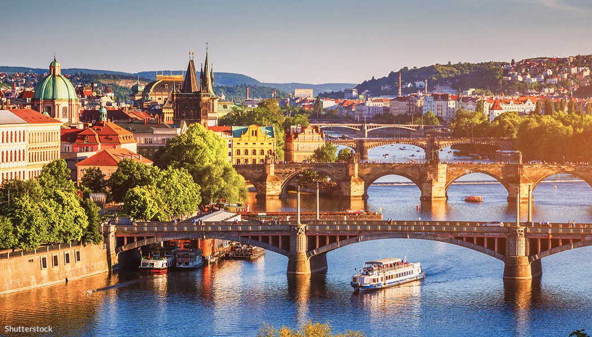
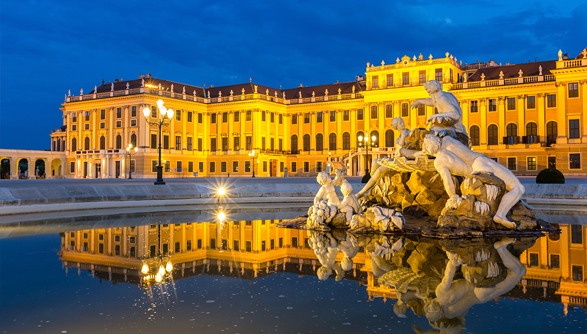

Bem-vindo a EuroTour
Praga, República Tcheca: O Coração da Europa Central
Praga é um conto de fadas medieval, com suas torres góticas, palácios barrocos e ruas de paralelepípedos. Passeie pela Ponte Carlos, com suas estátuas centenárias, explore o Castelo de Praga e maravilhe-se com a impressionante Catedral de São Vito. À noite, mergulhe na vibrante cena de bares e pubs, onde a cerveja é abundante e a atmosfera é sempre acolhedora.
Barcelona, Espanha: O Encontro da Arte e da Arquitetura Modernista
Banho de sol nas praias douradas de Barcelona ou descubra as maravilhas arquitetônicas de Antoni Gaudí, como a Sagrada Família e o Parque Güell. Caminhe pelas ruas do bairro gótico, onde cada esquina revela uma nova surpresa histórica, e delicie-se com a rica culinária catalã em restaurantes pitorescos. Barcelona é uma cidade que convida à exploração, onde o passado e o presente se fundem em uma tapeçaria cultural incomparável.

Viena, Áustria: O Esplendor Imperial na Terra da Música
Viena, a cidade dos imperadores e dos compositores clássicos, é um tesouro de beleza e cultura. Deixe-se levar pela grandiosidade da Ópera Estatal de Viena, onde os sons de Mozart e Strauss ainda ecoam pelos salões. Explore os palácios majestosos, como Schönbrunn e Belvedere, e maravilhe-se com a elegância da arquitetura barroca e neoclássica. Passeie pelas ruas do centro histórico, onde cafés tradicionais oferecem um refúgio acolhedor para saborear strudels e cafés vienenses. Viena é uma sinfonia para os sentidos, onde o passado glorioso se encontra com o presente em uma harmonia perfeita.
